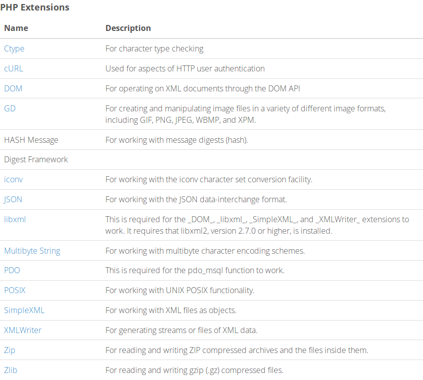

OwnCloud es una aplicación de software libre del Servicio de alojamiento de archivos que permite el almacenamiento en línea y aplicaciones en línea (cloud computing).OwnCloud puede ser instalado dentro de un servidor que disponga de una versión reciente de PHP (mayor o igual a 5.6) y soporte de SQLite (base de datos por defecto), MySQL o PostgreSQL.
mysql -uroot -p
La creamos:cd ~
wget http://download.owncloud.org/community/owncloud-latest.tar.bz2
tar tar -xjf owncloud-latest.tar.bz2
tar sudo mv owncloud /var/www/html/
sudo apt-get update
Tras ello, deberemos de obtener los dos paquetes necesarios :apt-get install php libapache2-mod-php php-mcrypt php-mysql
nano /etc/apache2/mods-enabled/dir.conf
IfModule mod_dir.c
DirectoryIndex index.html index.cgi index.pl index.php index.xhtml index.htm
/IfModule>
IfModule mod_dir.c>
DirectoryIndex index.php index.html index.cgi index.pl index.xhtml index.htm
/IfModule>

http://nombre_DNS_o_IP
Aparecera esto y lo rellenaremos con el nombre de usuario y la contraseña: